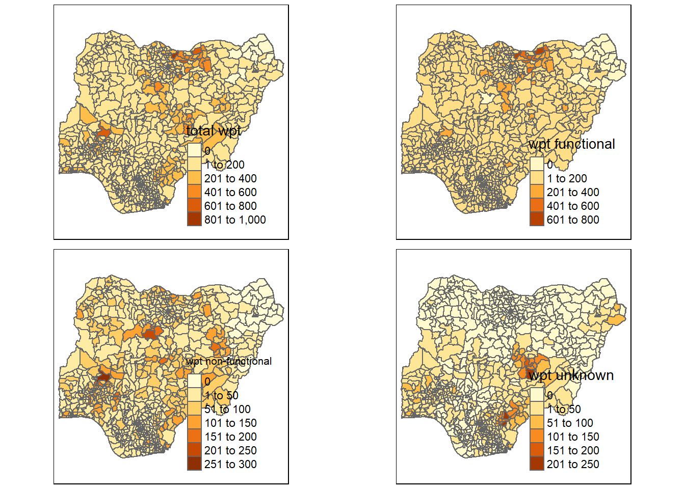
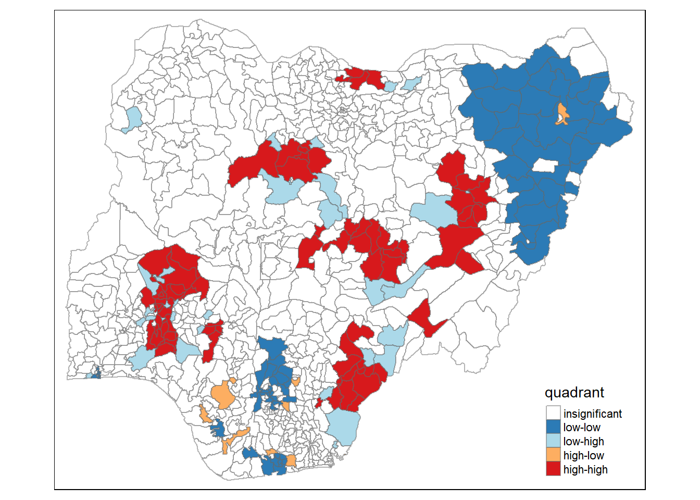

pacman::p_load(sf, tidyverse, tmap, spdep, funModeling)Water Level for Nigeria
Take-home Exercise 1
November 30, 2022
Overview
For this study, we will use the following packages.
sf- Support for simple features, a standardized way to encode spatial vector data. Binds to ‘GDAL’ for reading and writing data, to ‘GEOS’ for geometrical operations, and to ‘PROJ’ for projection conversions and datum transformations. Uses by default the ‘s2’ package for spherical geometry operations on ellipsoidal (long/lat) coordinates.tidyverse- Loading the core tidyverse packages which will be used for data wrangling and visualisation.tmap- Thematic maps are geographical maps in which spatial data distributions are visualized. This package offers a flexible, layer-based, and easy to use approach to create thematic maps, such as choropleths and bubble maps.spdep- A collection of functions to create spatial weights matrix objects from polygon ‘contiguities’, from point patterns by distance and tessellations, for summarizing these objects, and for permitting their use in spatial data analysis, including regional aggregation by minimum spanning tree; a collection of tests for spatial ‘autocorrelation’.patchwork- Combine separate ggplots into the same graphic.
Setting the Scene
Water is an important resource to mankind. Clean and accessible water is critical to human health. It provides a healthy environment, a sustainable economy, reduces poverty and ensures peace and security. Yet over 40% of the global population does not have access to sufficient clean water. By 2025, 1.8 billion people will be living in countries or regions with absolute water scarcity, according to UN-Water. The lack of water poses a major threat to several sectors, including food security. Agriculture uses about 70% of the world’s accessible freshwater.
Developing countries are most affected by water shortages and poor water quality. Up to 80% of illnesses in the developing world are linked to inadequate water and sanitation. Despite technological advancement, providing clean water to the rural community is still a major development issues in many countries globally, especially countries in the Africa continent.
To address the issue of providing clean and sustainable water supply to the rural community, a global Water Point Data Exchange (WPdx) project has been initiated. The main aim of this initiative is to collect water point related data from rural areas at the water point or small water scheme level and share the data via WPdx Data Repository, a cloud-based data library. What is so special of this project is that data are collected based on WPDx Data Standard.
Objectives
Geospatial analytics hold tremendous potential to address complex problems facing society. In this study, you are tasked to apply appropriate global and local measures of spatial Association techniques to reveals the spatial patterns of Not Functional water points. For the purpose of this study, Nigeria will be used as the study country.
The Data
Apstial data
For the purpose of this assignment, data from WPdx Global Data Repositories will be used. There are two versions of the data. They are: WPdx-Basic and WPdx+. You are required to use WPdx+ data set.
Geospatial data
Nigeria Level-2 Administrative Boundary (also known as Local Government Area) polygon features GIS data will be used in this take-home exercise. The data can be downloaded either from The Humanitarian Data Exchange portal or geoBoundaries.
The Task
The specific tasks of this take-home exercise are as follows:
Using appropriate sf method, import the shapefile into R and save it in a simple feature data frame format. Note that there are three Projected Coordinate Systems of Nigeria, they are: EPSG: 26391, 26392, and 26303. You can use any one of them.
Using appropriate tidyr and dplyr methods, derive the proportion of functional and non-functional water point at LGA level.
Combining the geospatial and aspatial data frame into simple feature data frame.
Performing outliers/clusters analysis by using appropriate local measures of spatial association methods.
Performing hotspot areas analysis by using appropriate local measures of spatial association methods.
Thematic Mapping
- Plot maps to show the spatial distribution of functional and non-functional water point rate at LGA level by using appropriate thematic mapping technique provided by tmap package.
Analytical Mapping
- Plot hotspot areas and outliers/clusters maps of functional and non0functional water point rate at LGA level by using appropriate thematic mapping technique provided by tmap package.
Getting Started
Importing Data into R
In this in-class data, two geospatial data sets will be used, they are:
geo_export
nga_admbnda_adm2_osgof_20190417
Importing Geospatial Data
First, we are going to import the water point geospatial data (i.e. geo_export) by using the code chunk below.
wp <- st_read(dsn = "data/geospatial",
layer = "geo_export",
crs = 4326) %>%
filter(clean_coun == "Nigeria")Things to learn from the code chunk above:
st_read()of sf package is used to import geo_export shapefile into R environment and save the imported geospatial data into simple feature data table.filter()of dplyr package is used to extract water point records of Nigeria.
Be warned: Avoid performing transformation if you plan to use
st_intersects()of sf package in the later stage of the geoprocessing. This is becausest_intersects()only works correctly if the geospatial data are in geographic coordinate system (i.e. wgs84)
Next, write_rds() of readr package is used to save the extracted sf data table (i.e. wp) into an output file in rds data format. The output file is called wp_nga.rds and it is saved in geodata sub-folder.
write_rds(wp, "data/geospatial/wp_nga.rds")Importing Nigeria LGA boundary data
Now, we are going to import the LGA boundary data into R environment by using the code chunk below.
nga <- st_read(dsn = "data/geospatial",
layer = "nga_admbnda_adm2_osgof_20190417",
crs = 4326)Thing to learn from the code chunk above.
st_read()of sf package is used to import nga_admbnda_adm2_osgof_20190417 shapefile into R environment and save the imported geospatial data into simple feature data table.
Data Wrangling
The practice of correcting or deleting inaccurate, damaged, improperly formatted, duplicate, or incomplete data from a dataset is known as data wrangling. There are numerous ways for data to be duplicated or incorrectly categorized when merging multiple data sources. We willl now proceed to ensure our data is cleaned before conducting our analysis.
Recoding NA values into string
In the code chunk below, replace_na() is used to recode all the NA values in status_cle field into Unknown.
wp_nga <- read_rds("data/geospatial/wp_nga.rds") %>%
mutate(status_cle = replace_na(status_cle, "Unknown"))EDA
In the code chunk below, freq() of funModeling package is used to display the distribution of status_cle field in wp_nga.
freq(data=wp_nga,
input = 'status_cle')Extracting Water Point Data
In this section, we will extract the water point records by using classes in status_cle field.
Extracting funtional water point
In the code chunk below, filter() of dplyr is used to select functional water points.
wpt_functional <- wp_nga %>%
filter(status_cle %in%
c("Functional",
"Functional but not in use",
"Functional but needs repair"))freq(data=wpt_functional,
input = 'status_cle')Extracting non-funtional water point
In the code chunk below, filter() of dplyr is used to select non-functional water points.
wpt_nonfunctional <- wp_nga %>%
filter(status_cle %in%
c("Abandoned/Decommissioned",
"Abandoned",
"Non-Functional",
"Non functional due to dry season",
"Non-Functional due to dry season"))freq(data=wpt_nonfunctional,
input = 'status_cle')Extracting water point with Unknown class
In the code chunk below, filter() of dplyr is used to select water points with unknown status.
wpt_unknown <- wp_nga %>%
filter(status_cle == "Unknown")Performing Point-in-Polygon Count
nga_wp <- nga %>%
mutate(`total wpt` = lengths(
st_intersects(nga, wp_nga))) %>%
mutate(`wpt functional` = lengths(
st_intersects(nga, wpt_functional))) %>%
mutate(`wpt non-functional` = lengths(
st_intersects(nga, wpt_nonfunctional))) %>%
mutate(`wpt unknown` = lengths(
st_intersects(nga, wpt_unknown)))Saving the Analytical Data Table
nga_wp <- nga_wp %>%
mutate(pct_functional = `wpt functional`/`total wpt`) %>%
mutate(`pct_non-functional` = `wpt non-functional`/`total wpt`) %>%
select(3:4, 9:10, 18:23)Things to learn from the code chunk above:
mutate()of dplyr package is used to derive two fields namely pct_functional and pct_non-functional.to keep the file size small,
select()of dplyr is used to retain only field 3,4,9,10, 18,19,20,21,22,and 23.
Now, you have the tidy sf data table subsequent analysis. We will save the sf data table into rds format.
write_rds(nga_wp, "data/geospatial/nga_wp.rds")Before you end this section, please remember to delete away all the raw data. Notice that the only data file left is nga_wp.rds and it’s file size is aroung 2.1MB.
Visualising the spatial dsitribution of water points
nga_wp <- read_rds("data/geospatial/nga_wp.rds")total <- qtm(nga_wp, "total wpt")
wp_functional <- qtm(nga_wp, "wpt functional")
wp_nonfunctional <- qtm(nga_wp, "wpt non-functional")
unknown <- qtm(nga_wp, "wpt unknown")
tmap_arrange(total, wp_functional, wp_nonfunctional, unknown, asp=1, ncol=2)
Outliers / Clusters Analysis
Thematic Mapping
A map is drawn to show the spatial distribution of functional and non-functional water point rates at the LGA level by using appropriate thematic mapping techniques provided by the tmap package. Now, we are going to prepare a basemap and a choropleth map showing the spatial pattern of non-functional water points by using qtm() of tmap package.
equal <- tm_shape(nga_wp) +
tm_fill("wpt non-functional",
n = 5,
style = "equal") +
tm_borders(alpha = 0.5) +
tm_layout(main.title = "Equal interval classification")
quantile <- tm_shape(nga_wp) +
tm_fill("wpt non-functional",
n = 5,
style = "quantile") +
tm_borders(alpha = 0.5) +
tm_layout(main.title = "Equal quantile classification")
tmap_arrange(equal,
quantile,
asp=1,
ncol=2)
Cluster and Outlier Analysis
Before we can compute the global spatial autocorrelation statistics, we need to construct a spatial weights of the study area. The spatial weights is used to define the neighbourhood relationships between the geographical units (i.e. county) in the study area.
In this section, we will learn use poly2nb() of spdep package to compute contiguity weight matrices for the study area. This function builds a neighbours list based on regions with contiguous boundaries. We can pass a “queen” argument that takes TRUE or FALSE as options. If we do not specify this argument the default is set to TRUE, that is, if we don’t specify queen = FALSE this function will return a list of first order neighbours using the Queen criteria.
wm_q <- poly2nb(nga_wp,
queen=TRUE)
summary(wm_q)Neighbour list object:
Number of regions: 774
Number of nonzero links: 4440
Percentage nonzero weights: 0.7411414
Average number of links: 5.736434
1 region with no links:
86
Link number distribution:
0 1 2 3 4 5 6 7 8 9 10 11 12 14
1 2 14 57 125 182 140 122 72 41 12 4 1 1
2 least connected regions:
138 560 with 1 link
1 most connected region:
508 with 14 linksThe summary report above shows that there are 774 area units in Nigeria. The most connected area unit has 14 neighbours. There are two area units with only one heighbours.
For each polygon in our polygon object, wm_q lists all neighboring polygons. For example, to see the neighbors for the first polygon in the object, type:
set.ZeroPolicyOption(TRUE)[1] FALSENext, we need to assign weights to each neighboring polygon. In our case, each neighboring polygon will be assigned equal weight (style=“W”). This is accomplished by assigning the fraction 1/(#ofneighbors) to each neighboring county then summing the weighted income values. While this is the most intuitive way to summaries the neighbors’ values it has one drawback in that polygons along the edges of the study area will base their lagged values on fewer polygons thus potentially over- or under-estimating the true nature of the spatial autocorrelation in the data. For this example, we’ll stick with the style=“W” option for simplicity’s sake but note that other more robust options are available, notably style=“B”.
rswm_q <- nb2listw(wm_q,
style="W",
zero.policy = TRUE)
rswm_qCharacteristics of weights list object:
Neighbour list object:
Number of regions: 774
Number of nonzero links: 4440
Percentage nonzero weights: 0.7411414
Average number of links: 5.736434
1 region with no links:
86
Weights style: W
Weights constants summary:
n nn S0 S1 S2
W 773 597529 773 285.0658 3198.414The input of nb2listw() must be an object of class nb. The syntax of the function has two major arguments, namely style and zero.poly.
style can take values “W”, “B”, “C”, “U”, “minmax” and “S”. B is the basic binary coding, W is row standardised (sums over all links to n), C is globally standardised (sums over all links to n), U is equal to C divided by the number of neighbours (sums over all links to unity), while S is the variance-stabilizing coding scheme proposed by Tiefelsdorf et al. 1999, p. 167-168 (sums over all links to n).
If zero policy is set to TRUE, weights vectors of zero length are inserted for regions without neighbour in the neighbours list. These will in turn generate lag values of zero, equivalent to the sum of products of the zero row t(rep(0, length=length(neighbours))) %*% x, for arbitrary numerical vector x of length length(neighbours). The spatially lagged value of x for the zero-neighbour region will then be zero, which may (or may not) be a sensible choice.
Global Spatial Autocorrelation: Local Moron’s I
The code chunk below performs Moran’s I statistical testing using moran.test() of spdep.
moran.test(nga_wp$`wpt non-functional`,
listw = rswm_q,
zero.policy = TRUE,
na.action = na.omit)
Moran I test under randomisation
data: nga_wp$`wpt non-functional`
weights: rswm_q n reduced by no-neighbour observations
Moran I statistic standard deviate = 20.043, p-value < 2.2e-16
alternative hypothesis: greater
sample estimates:
Moran I statistic Expectation Variance
0.433932927 -0.001295337 0.000471516 To compute local Moran’s I, the localmoran() function of spdep will be used. It computes Ii values, given a set of zi values and a listw object providing neighbour weighting information for the polygon associated with the zi values.
The code chunks below are used to compute local Moran’s I at the county level.
localMI <- localmoran(nga_wp$`wpt non-functional`, rswm_q)
head(localMI) Ii E.Ii Var.Ii Z.Ii Pr(z != E(Ii))
1 -0.32365786 -9.995243e-04 1.924638e-01 -0.73547576 0.46204980
2 0.07000542 -4.092463e-05 1.053077e-02 0.68258288 0.49487045
3 1.25819985 -1.627684e-03 4.181728e-01 1.94819847 0.05139122
4 -0.03537489 -5.427505e-05 5.954304e-03 -0.45773361 0.64714384
5 0.01201533 -2.590965e-04 3.988998e-02 0.06145673 0.95099547
6 0.00768085 -1.538445e-07 1.687859e-05 1.86960486 0.06153871localmoran() function returns a matrix of values whose columns are:
Ii: the local Moran’s I statistics
E.Ii: the expectation of local moran statistic under the randomisation hypothesis
Var.Ii: the variance of local moran statistic under the randomisation hypothesis
Z.Ii:the standard deviate of local moran statistic
Pr(): the p-value of local moran statistic
Mapping the local Moran’s I
Before mapping the local Moran’s I map, it is wise to append the local Moran’s I dataframe (i.e. localMI) onto hunan SpatialPolygonDataFrame. The code chunks below can be used to perform the task. The out SpatialPolygonDataFrame is called nga.localMI.
nga.localMI <- cbind(nga_wp,localMI) %>%
rename(Pr.Ii = Pr.z....E.Ii..)Mapping local Moran’s I values
Using choropleth mapping functions of tmap package, we can plot the local Moran’s I values by using the code chinks below.
tm_shape(nga.localMI) +
tm_fill(col = "Ii",
style = "pretty",
palette = "RdBu",
title = "local moran statistics") +
tm_borders(alpha = 0.5)Mapping local Moran’s I p-values
The choropleth shows there is evidence for both positive and negative Ii values. However, it is useful to consider the p-values for each of these values, as consider above.
The code chunks below produce a choropleth map of Moran’s I p-values by using functions of tmap package.
tm_shape(nga.localMI) +
tm_fill(col = "Pr.Ii",
breaks=c(-Inf, 0.001, 0.01, 0.05, 0.1, Inf),
palette="-Blues",
title = "local Moran's I p-values") +
tm_borders(alpha = 0.5)
Mapping both local Moran’s I values and p-values
For effective interpretation, it is better to plot both the local Moran’s I values map and its corresponding p-values map next to each other.
The code chunk below will be used to create such visualisation.
localMI.map <- tm_shape(nga.localMI) +
tm_fill(col = "Ii",
style = "pretty",
title = "local moran statistics") +
tm_borders(alpha = 0.5)
pvalue.map <- tm_shape(nga.localMI) +
tm_fill(col = "Pr.Ii",
breaks=c(-Inf, 0.001, 0.01, 0.05, 0.1, Inf),
palette="-Blues",
title = "local Moran's I p-values") +
tm_borders(alpha = 0.5)
tmap_arrange(localMI.map, pvalue.map, ncol=2)
Creating a LISA Cluster Map
The LISA Cluster Map shows the significant locations color coded by type of spatial autocorrelation. The first step before we can generate the LISA cluster map is to plot the Moran scatterplot.
Plotting Moran scatterplot
The Moran scatterplot is an illustration of the relationship between the values of the chosen attribute at each location and the average value of the same attribute at neighboring locations.
The code chunk below plots the Moran scatterplot of Nigeria 2019 by using moran.plot() of spdep.
nci <- moran.plot(nga_wp$`wpt non-functional`, rswm_q,
labels=as.character(nga_wp$shapeName),
xlab="Non-Functional waterpoints",
ylab="Spatially Lag Non-functional waterpoints")Notice that the plot is split in 4 quadrants. The top right corner belongs to areas that have high water level and are surrounded by other areas that have the average level of water. This are the high-high locations in the lesson slide.
Plotting Moran scatterplot with standardised variable
First we will use scale() to centers and scales the variable. Here centering is done by subtracting the mean (omitting NAs) the corresponding columns, and scaling is done by dividing the (centered) variable by their standard deviations.
nga_wp$Z.nonfunc <- scale(nga_wp$`wpt non-functional`) %>%
as.vector The as.vector() added to the end is to make sure that the data type we get out of this is a vector, that map neatly into out dataframe.
Now, we are ready to plot the Moran scatterplot again by using the code chunk below.
nci2 <- moran.plot(nga_wp$Z.nonfunc, rswm_q,
labels=as.character(nga_wp$shapeName),
xlab="z-no functional points",
ylab="Spatially Lag non functional points")Preparing LISA map classes
The code chunks below show the steps to prepare a LISA cluster map.
quadrant <- vector(mode="numeric",length=nrow(localMI))
nga_wp$lag_non_func_points <- lag.listw(rswm_q, nga_wp$`wpt non-functional`)
DV <- nga_wp$lag_non_func_points - mean(nga_wp$lag_non_func_points)
LM_I <- localMI[,1] - mean(localMI[,1])
signif <- 0.05
quadrant[DV <0 & LM_I>0] <- 1
quadrant[DV >0 & LM_I<0] <- 2
quadrant[DV <0 & LM_I<0] <- 3
quadrant[DV >0 & LM_I>0] <- 4
quadrant[localMI[,5]>signif] <- 0Plotting LISA MAP
Now, we can build the LISA map by using the code chunks below.
nga.localMI$quadrant <- quadrant
colors <- c("#ffffff", "#2c7bb6", "#abd9e9", "#fdae61", "#d7191c")
clusters <- c("insignificant", "low-low", "low-high", "high-low", "high-high")
tm_shape(nga.localMI) +
tm_fill(col = "quadrant",
style = "cat",
palette = colors[c(sort(unique(quadrant)))+1],
labels = clusters[c(sort(unique(quadrant)))+1],
popup.vars = c("")) +
tm_view(set.zoom.limits = c(11,17)) +
tm_borders(alpha=0.5)
For effective interpretation, it is better to plot both the local Moran’s I values map and its corresponding p-values map next to each other.
The code chunk below will be used to create such visualisation.
nonfunc <- qtm(nga_wp, "wpt non-functional")
nga.localMI$quadrant <- quadrant
colors <- c("#ffffff", "#2c7bb6", "#abd9e9", "#fdae61", "#d7191c")
clusters <- c("insignificant", "low-low", "low-high", "high-low", "high-high")
LISAmap <- tm_shape(nga.localMI) +
tm_fill(col = "quadrant",
style = "cat",
palette = colors[c(sort(unique(quadrant)))+1],
labels = clusters[c(sort(unique(quadrant)))+1],
popup.vars = c("")) +
tm_view(set.zoom.limits = c(11,17)) +
tm_borders(alpha=0.5)
tmap_arrange(nonfunc, LISAmap,
asp=1, ncol=2)tmap_arrange(localMI.map, pvalue.map, ncol=2)
Hotspot Areas Analysis
Beside detecting cluster and outliers, localised spatial statistics can be also used to detect hot spot and/or cold spot areas. An alternative spatial statistics to detect spatial anomalies is the Getis and Ord’s G-statistics (Getis and Ord, 1972; Ord and Getis, 1995). It looks at neighbours within a defined proximity to identify where either high or low values clutser spatially. Here, statistically significant hot-spots are recognised as areas of high values where other areas within a neighbourhood range also share high values too.
The analysis consists of three steps:
Deriving spatial weight matrix
Computing Gi statistics
Mapping Gi statistics
Deriving distance based weight matrix
First, we need to define a new set of neighbours. Whist the spatial autocorrelation considered units which shared borders, for Getis-Ord we are defining neighbours based on distance.
There are two type of distance-based proximity matrix, they are:
fixed distance weight matrix; and
adaptive distance weight matrix.
Deriving the centroid
We will need points to associate with each polygon before we can make our connectivity graph. It will be a little more complicated than just running st_centroid() on the sf object: us.bound. We need the coordinates in a separate data frame for this to work. To do this we will use a mapping function. The mapping function applies a given function to each element of a vector and returns a vector of the same length. Our input vector will be the geometry column of us.bound. Our function will be st_centroid(). We will be using map_dbl variation of map from the purrr package. For more documentation, check out map documentation
To get our longitude values we map the st_centroid() function over the geometry column of us.bound and access the longitude value through double bracket notation [[]] and 1. This allows us to get only the longitude, which is the first value in each centroid.
longitude <- map_dbl(nga_wp$geometry, ~st_centroid(.x)[[1]])
latitude <- map_dbl(nga_wp$geometry, ~st_centroid(.x)[[2]])
coords <- cbind(longitude, latitude)
k1 <- knn2nb(knearneigh(coords))
k1dists <- unlist(nbdists(k1, coords, longlat = TRUE))
summary(k1dists) Min. 1st Qu. Median Mean 3rd Qu. Max.
2.662 12.815 20.242 22.031 27.706 71.661 The summary report shows that the largest first nearest neighbour distance is 71.661 km, so using this as the upper threshold gives certainty that all units will have at least one neighbour.
Computing fixed distance weight matrix
Now, we will compute the distance weight matrix by using dnearneigh() as shown in the code chunk below.
wm_d62 <- dnearneigh(coords, 0, 62, longlat = TRUE)
wm_d62Neighbour list object:
Number of regions: 774
Number of nonzero links: 13830
Percentage nonzero weights: 2.308555
Average number of links: 17.86822
6 regions with no links:
93 112 123 236 452 670Next, nb2listw() is used to convert the nb object into spatial weights object.
wm62_lw <- nb2listw(wm_d62, style = 'B')
summary(wm62_lw)Characteristics of weights list object:
Neighbour list object:
Number of regions: 774
Number of nonzero links: 13830
Percentage nonzero weights: 2.308555
Average number of links: 17.86822
6 regions with no links:
93 112 123 236 452 670
Link number distribution:
0 1 2 3 4 5 6 7 8 9 10 11 12 13 14 15 16 17 18 19 20 21 22 23 24 25
6 12 16 33 38 47 47 44 26 38 20 21 17 28 19 17 29 10 6 14 5 11 5 18 11 15
26 27 28 29 30 31 32 33 34 35 36 37 38 39 40 41 42 43 44 45 46 47 48 49 50 51
16 12 15 13 16 11 7 9 9 11 3 9 6 7 8 4 4 6 2 6 6 5 5 8 3 2
52 53 54 55 56 57
5 5 5 1 1 1
12 least connected regions:
3 90 91 163 237 271 402 494 507 649 708 710 with 1 link
1 most connected region:
619 with 57 links
Weights style: B
Weights constants summary:
n nn S0 S1 S2
B 768 589824 13830 27660 1591400Computing Adaptive Distance
One of the characteristics of fixed distance weight matrix is that more densely settled areas (usually the urban areas) tend to have more neighbours and the less densely settled areas (usually the rural counties) tend to have lesser neighbours. Having many neighbours smoothes the neighbour relationship across more neighbours.
It is possible to control the numbers of neighbours directly using k-nearest neighbours, either accepting asymmetric neighbours or imposing symmetry as shown in the code chunk below.
knn <- knn2nb(knearneigh(coords, k=8))
knnNeighbour list object:
Number of regions: 774
Number of nonzero links: 6192
Percentage nonzero weights: 1.033592
Average number of links: 8
Non-symmetric neighbours listknn_lw <- nb2listw(knn, style = 'B')
summary(knn_lw)Characteristics of weights list object:
Neighbour list object:
Number of regions: 774
Number of nonzero links: 6192
Percentage nonzero weights: 1.033592
Average number of links: 8
Non-symmetric neighbours list
Link number distribution:
8
774
774 least connected regions:
1 2 3 4 5 6 7 8 9 10 11 12 13 14 15 16 17 18 19 20 21 22 23 24 25 26 27 28 29 30 31 32 33 34 35 36 37 38 39 40 41 42 43 44 45 46 47 48 49 50 51 52 53 54 55 56 57 58 59 60 61 62 63 64 65 66 67 68 69 70 71 72 73 74 75 76 77 78 79 80 81 82 83 84 85 86 87 88 89 90 91 92 93 94 95 96 97 98 99 100 101 102 103 104 105 106 107 108 109 110 111 112 113 114 115 116 117 118 119 120 121 122 123 124 125 126 127 128 129 130 131 132 133 134 135 136 137 138 139 140 141 142 143 144 145 146 147 148 149 150 151 152 153 154 155 156 157 158 159 160 161 162 163 164 165 166 167 168 169 170 171 172 173 174 175 176 177 178 179 180 181 182 183 184 185 186 187 188 189 190 191 192 193 194 195 196 197 198 199 200 201 202 203 204 205 206 207 208 209 210 211 212 213 214 215 216 217 218 219 220 221 222 223 224 225 226 227 228 229 230 231 232 233 234 235 236 237 238 239 240 241 242 243 244 245 246 247 248 249 250 251 252 253 254 255 256 257 258 259 260 261 262 263 264 265 266 267 268 269 270 271 272 273 274 275 276 277 278 279 280 281 282 283 284 285 286 287 288 289 290 291 292 293 294 295 296 297 298 299 300 301 302 303 304 305 306 307 308 309 310 311 312 313 314 315 316 317 318 319 320 321 322 323 324 325 326 327 328 329 330 331 332 333 334 335 336 337 338 339 340 341 342 343 344 345 346 347 348 349 350 351 352 353 354 355 356 357 358 359 360 361 362 363 364 365 366 367 368 369 370 371 372 373 374 375 376 377 378 379 380 381 382 383 384 385 386 387 388 389 390 391 392 393 394 395 396 397 398 399 400 401 402 403 404 405 406 407 408 409 410 411 412 413 414 415 416 417 418 419 420 421 422 423 424 425 426 427 428 429 430 431 432 433 434 435 436 437 438 439 440 441 442 443 444 445 446 447 448 449 450 451 452 453 454 455 456 457 458 459 460 461 462 463 464 465 466 467 468 469 470 471 472 473 474 475 476 477 478 479 480 481 482 483 484 485 486 487 488 489 490 491 492 493 494 495 496 497 498 499 500 501 502 503 504 505 506 507 508 509 510 511 512 513 514 515 516 517 518 519 520 521 522 523 524 525 526 527 528 529 530 531 532 533 534 535 536 537 538 539 540 541 542 543 544 545 546 547 548 549 550 551 552 553 554 555 556 557 558 559 560 561 562 563 564 565 566 567 568 569 570 571 572 573 574 575 576 577 578 579 580 581 582 583 584 585 586 587 588 589 590 591 592 593 594 595 596 597 598 599 600 601 602 603 604 605 606 607 608 609 610 611 612 613 614 615 616 617 618 619 620 621 622 623 624 625 626 627 628 629 630 631 632 633 634 635 636 637 638 639 640 641 642 643 644 645 646 647 648 649 650 651 652 653 654 655 656 657 658 659 660 661 662 663 664 665 666 667 668 669 670 671 672 673 674 675 676 677 678 679 680 681 682 683 684 685 686 687 688 689 690 691 692 693 694 695 696 697 698 699 700 701 702 703 704 705 706 707 708 709 710 711 712 713 714 715 716 717 718 719 720 721 722 723 724 725 726 727 728 729 730 731 732 733 734 735 736 737 738 739 740 741 742 743 744 745 746 747 748 749 750 751 752 753 754 755 756 757 758 759 760 761 762 763 764 765 766 767 768 769 770 771 772 773 774 with 8 links
774 most connected regions:
1 2 3 4 5 6 7 8 9 10 11 12 13 14 15 16 17 18 19 20 21 22 23 24 25 26 27 28 29 30 31 32 33 34 35 36 37 38 39 40 41 42 43 44 45 46 47 48 49 50 51 52 53 54 55 56 57 58 59 60 61 62 63 64 65 66 67 68 69 70 71 72 73 74 75 76 77 78 79 80 81 82 83 84 85 86 87 88 89 90 91 92 93 94 95 96 97 98 99 100 101 102 103 104 105 106 107 108 109 110 111 112 113 114 115 116 117 118 119 120 121 122 123 124 125 126 127 128 129 130 131 132 133 134 135 136 137 138 139 140 141 142 143 144 145 146 147 148 149 150 151 152 153 154 155 156 157 158 159 160 161 162 163 164 165 166 167 168 169 170 171 172 173 174 175 176 177 178 179 180 181 182 183 184 185 186 187 188 189 190 191 192 193 194 195 196 197 198 199 200 201 202 203 204 205 206 207 208 209 210 211 212 213 214 215 216 217 218 219 220 221 222 223 224 225 226 227 228 229 230 231 232 233 234 235 236 237 238 239 240 241 242 243 244 245 246 247 248 249 250 251 252 253 254 255 256 257 258 259 260 261 262 263 264 265 266 267 268 269 270 271 272 273 274 275 276 277 278 279 280 281 282 283 284 285 286 287 288 289 290 291 292 293 294 295 296 297 298 299 300 301 302 303 304 305 306 307 308 309 310 311 312 313 314 315 316 317 318 319 320 321 322 323 324 325 326 327 328 329 330 331 332 333 334 335 336 337 338 339 340 341 342 343 344 345 346 347 348 349 350 351 352 353 354 355 356 357 358 359 360 361 362 363 364 365 366 367 368 369 370 371 372 373 374 375 376 377 378 379 380 381 382 383 384 385 386 387 388 389 390 391 392 393 394 395 396 397 398 399 400 401 402 403 404 405 406 407 408 409 410 411 412 413 414 415 416 417 418 419 420 421 422 423 424 425 426 427 428 429 430 431 432 433 434 435 436 437 438 439 440 441 442 443 444 445 446 447 448 449 450 451 452 453 454 455 456 457 458 459 460 461 462 463 464 465 466 467 468 469 470 471 472 473 474 475 476 477 478 479 480 481 482 483 484 485 486 487 488 489 490 491 492 493 494 495 496 497 498 499 500 501 502 503 504 505 506 507 508 509 510 511 512 513 514 515 516 517 518 519 520 521 522 523 524 525 526 527 528 529 530 531 532 533 534 535 536 537 538 539 540 541 542 543 544 545 546 547 548 549 550 551 552 553 554 555 556 557 558 559 560 561 562 563 564 565 566 567 568 569 570 571 572 573 574 575 576 577 578 579 580 581 582 583 584 585 586 587 588 589 590 591 592 593 594 595 596 597 598 599 600 601 602 603 604 605 606 607 608 609 610 611 612 613 614 615 616 617 618 619 620 621 622 623 624 625 626 627 628 629 630 631 632 633 634 635 636 637 638 639 640 641 642 643 644 645 646 647 648 649 650 651 652 653 654 655 656 657 658 659 660 661 662 663 664 665 666 667 668 669 670 671 672 673 674 675 676 677 678 679 680 681 682 683 684 685 686 687 688 689 690 691 692 693 694 695 696 697 698 699 700 701 702 703 704 705 706 707 708 709 710 711 712 713 714 715 716 717 718 719 720 721 722 723 724 725 726 727 728 729 730 731 732 733 734 735 736 737 738 739 740 741 742 743 744 745 746 747 748 749 750 751 752 753 754 755 756 757 758 759 760 761 762 763 764 765 766 767 768 769 770 771 772 773 774 with 8 links
Weights style: B
Weights constants summary:
n nn S0 S1 S2
B 774 599076 6192 11152 201942Computing GI Statistics
- Computing GI statistics with fixed distance
gi.fixed <- localG(nga_wp$`wpt non-functional`, wm62_lw)
nga_wp.gi <- cbind(nga_wp, as.matrix(gi.fixed)) %>%
rename(gstat_fixed = as.matrix.gi.fixed.)The output of localG() is a vector of G or Gstar values, with attributes “gstari” set to TRUE or FALSE, “call” set to the function call, and class “localG”.
The Gi statistics is represented as a Z-score. Greater values represent a greater intensity of clustering and the direction (positive or negative) indicates high or low clusters.
- Mapping fixed distance with weights
The code chunk below shows the functions used to map the Gi values derived using fixed distance weight matrix.
nonfunc <- qtm(nga_wp, "wpt non-functional")
Gimap <-tm_shape(nga_wp.gi) +
tm_fill(col = "gstat_fixed",
style = "pretty",
palette="-RdBu",
title = "local Gi") +
tm_borders(alpha = 0.5)
tmap_arrange(nonfunc, Gimap, asp=1, ncol=2)- Computing adaptive distance
gi.adaptive <- localG(nga_wp$`wpt non-functional`, knn_lw)
nga_wp.gi <- cbind(nga_wp, as.matrix(gi.adaptive)) %>%
rename(gstat_adaptive = as.matrix.gi.adaptive.)- Mapping adaptive distance with weights
It is time for us to visualise the locations of hot spot and cold spot areas. The choropleth mapping functions of tmap package will be used to map the Gi values.
The code chunk below shows the functions used to map the Gi values derived using fixed distance weight matrix.
nonfunc <- qtm(nga_wp, "wpt non-functional")
Gimap <- tm_shape(nga_wp.gi) +
tm_fill(col = "gstat_adaptive",
style = "pretty",
palette="-RdBu",
title = "local Gi") +
tm_borders(alpha = 0.5)
tmap_arrange(nonfunc,
Gimap,
asp=1,
ncol=2)Submission Instructions
The write-up of the take-home exercise must be in distill or blogdown format. You are required to publish the write-up on Netlify.
The R project of the take-home exercise must be pushed onto your Github repository.
You are required to provide the links to Netlify service of the take-home exercise write-up and github repository on eLearn.
Due Date
29th November 2022 (Tuesday), 11.59pm (midnight).